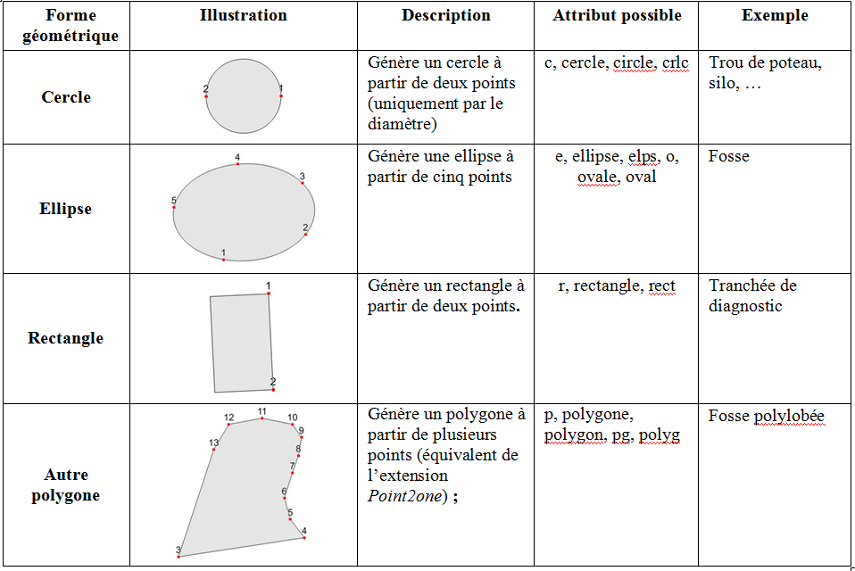
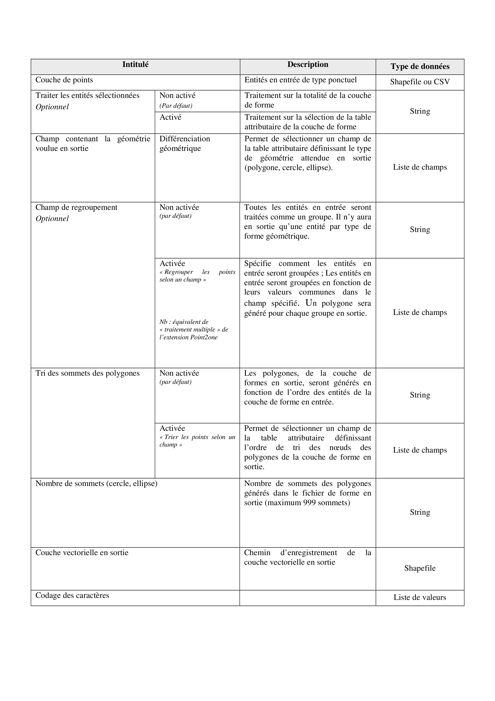
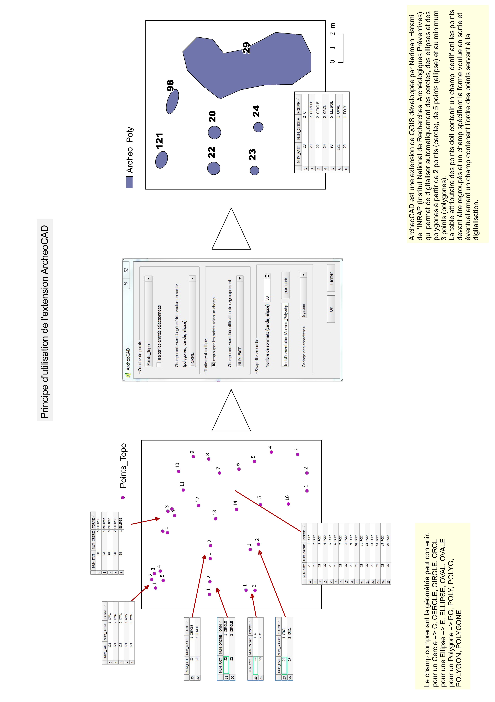
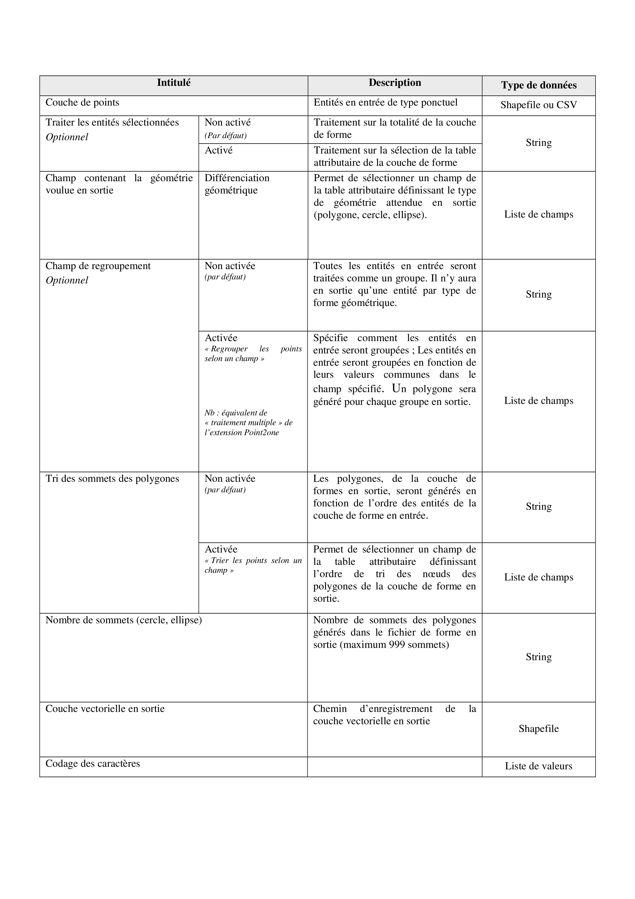
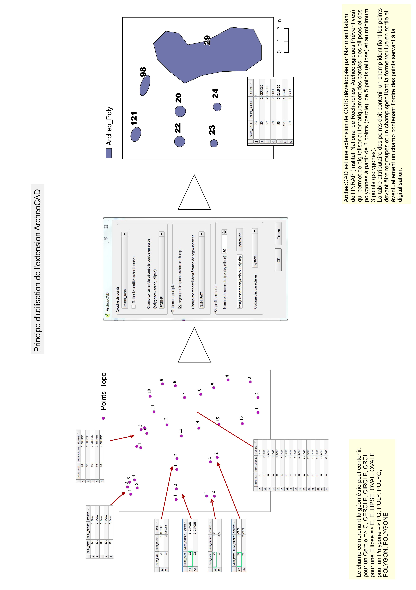
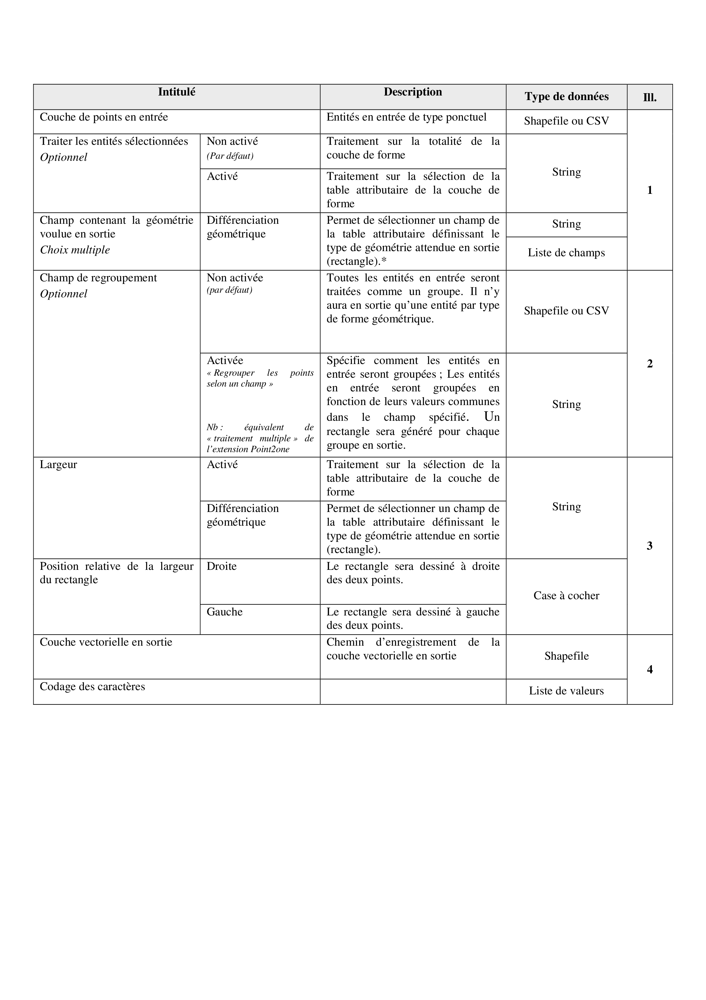
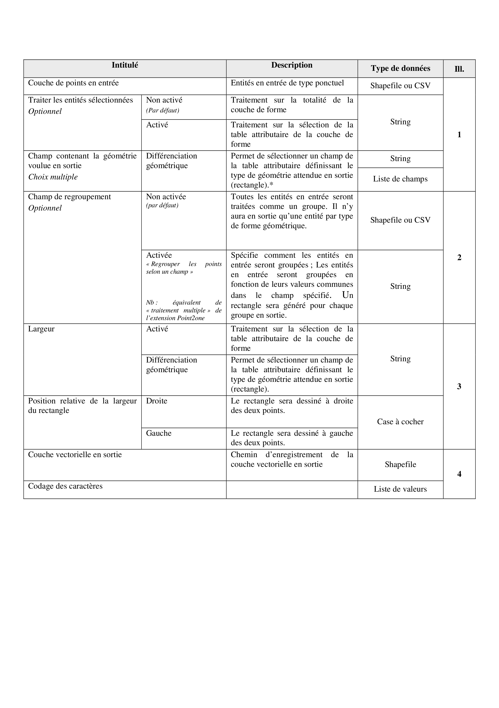

L’extension ArcheoCAD¶
Présentation¶
L’extension ArcheoCAD est une extension qui permet de générer, à partir d’une couche de points, des polygones de différents types : cercle, ellipse, rectangle et tout autre polygone. Pour ce faire, la table attributaire de la couche de point en entrée, doit contenir un champ contenant le type de géométrie souhaité en sortie. Pour être traitées par l’extension, les valeurs contenues dans le champ définissant la géométrie souhaitée pour le fichier de forme en sortie doivent être les suivantes (insensible à la casse):
- Pour une ellipse : e, ellipse, elps, o, ovale, oval
- Pour un cercle : c, cercle, circle, crlc
- Pour un rectangle : r, rectangle, rect
- Pour tout autre polygone : p, polygone, polygon, pg, polyg
La prise de points sur le terrain est soumise à plusieurs conditions :
- pour les cercles, les deux points seront pris sur le contour et correspondent au diamètre
- pour les ellipses, 5 points seront pris sur le contour
- pour le rectangle, il faut prendre 2 points qui correspondent à la longueur de la tranchée
Pour que les formes soient générées, les points topographiques doivent suivre le contour de la forme (comme si on dessinait cette forme au crayon). Si les points ne sont pas pris dans le bon ordre, il est possible d’ajouter dans la table attributaire, une colonne de tri qui indique l’ordre des nœuds des polygones en sortie.
Les entités surfaciques en sortie et leurs attributs varient selon qu’on ait choisi l’option de regroupement. Il est aussi possible de regrouper les points selon un champ de tri.
{kind=link}
Description des boîtes de dialogue¶
Boîte de dialogue « Poly-Cercle-Ellipse »¶
 



Boîte de dialogue « Rectangle »¶
 

Le code source est disponible à l’adresse suivante :
https://github.com/narimanInrap/ArcheoCAD.git